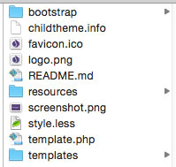

Drupal Guidelines
When you recieve a fresh Drupal installation, the following sections will help you properly set up your theme.
Theme Setup
In order leverage bootstrap tools within the Drupal admin, it is required to install the Bootstrap theme.
- If the developer on the project hasn’t instaleld the theme yet, you can download the bootstrap theme here, https://www.drupal.org/project/bootstrap, and install it at Admin > Appearance > Install New Theme.
- Note: The bootstrap theme requires you to install the jQuery Update module. You can find that here, https://www.drupal.org/project/jquery_update, and install it a Admin > Modules > Install New Module.
- Once installed, go to Admin > Config > Development > jQuery Update. Change the jQuery version to 1.9.
- Once those are installed, you have to create the child theme, which is where you will be doing all of your work. Go into your file system and navigate to the Sites > All > Themes > bootstrap > starterkits. Copy the less folder and paste it in the Sites > All > Themes directory (same level as the bootstrap theme).
- After it's copied, rename the less folder to the name of your subtheme (usually the client name or acronym, no spaces).
- Inside the newly renamed theme, you'll find less.starterkit. Rename that file to <same name as theme>.info.
- Open the .info file you just renamed, and edit the Line 1 (Name) and Line 2 (Description) with a general description about what the theme is for.
- Now that your theme is updated, the final step is to download the Bootstrap. Go to http://getbootstrap.com/getting-started/#download and click the "Download Source" button. Unzip this file and rename the expanded folder to simply say "bootstrap". Move the bootstrap folder into the root level of your child theme.
- Lastly, go back to your browser and navigate to the Admin > Appearance page. You'll see your newly created subtheme in the grid of selections. Simply click "Set Default" on it, and you'll be good to get started.
Theme Structure
The theme folder structure will vary a bit, from the standard folder structure outlined at the top of this notebook. There are some Drupal structural files and hooks that need to stay in place so that the theme functions properly.
Root Level
The most important file in the root level is the .info file. In this file, you create your regions and link your JS & Less libraries. Additionally, you'll want to update the favicon.ico, logo.png & screenshot.png with the custom design you are working on. Attached is an example:

JS Folder
The JS within the resources boilerplate will contain all your JS libraries and your global.js file. This global.js file will have all the JS snippets that you'll use on throughout the website. To reference the files, update the Scripts section in the .info file (make sure the global.js is your last referenced file, see attached).
Less Folder
The main less hook in the .info file references the style.less file in the root of the child theme. In this file, is the standard bootstrap import, the default overrides hook (necessary for drupal theme), and our custom base.less file hook. All of R2i's custom theme styles are created within the custom/ folder, please refer to the Drupal styles section for specifics.
Templates
The templates folder, you can override and create custom Drupal template files by simply copying the template file you want to customize (like page.tpl.php for example) and place it in this folder. Any template file in this folder will override the default, so you'll want to create your structure here.
Theme Styles
In your child theme, the less/custom folder will contains all the style that you're to create for the design. Ideally, based on our standard for files & folder structures, we are supposed to have individual folders for each component (including less, js, & image files). But in Druapl, there is no real advantage of having individual folders within less files in them. Since we have to individually reference .js files in the .info file, it doesn’t make sense to edit this file every time you want to add a component snippet. Additionally, the js files referenced in the .info file are called on every page on the site, so it makes sense to just add snippets to main.js, and have individual .less file for each component (see below).
Bootstrap.less
Bootstrap.less is essential to your theme & imports all bootstrap less files. You can customize and comment out the imports you are not going to use in order to propertly optimize you site weight.
Base.less
Base.less is your main less file that connects all the styles together. In this file, we have our pre-defined mixins, helpers, font references, media queries, base colors, bootstrap overrides, & @imports to each component.
General Components
General components that are used on the site, include things like the Header, Navigation, Footer, Forms, Tables, etc. These .less file are named their respective names, and are referenced under the "Framework" section in the @imports portion of main.less
Template Styles
Template styles, which are intended to be structural or template specific variations, are included in template-homepage.less, template-interior.less, template-landing.less, etc.
Component Styles
Component styles are specific for components on your website. You should follow naming convention component-<component name>.less. So for example, if you have a general tabs styles on your website, you would give it a file name called component-tabs.less. If there is another version of tabs, you can narrow the specificity, such as component-tabs-landing.less. Just use your best judgment when naming components.
Recommended Modules
Below is a list of useful modules to download/install on your next Drupal project.
-
Node Class
- Download: https://www.drupal.org/project/node_class
- Summary: Allows you to add classes to any node
-
Block Class
- Download: https://www.drupal.org/project/block_class
- Summary: Allows you to add classes to any block
-
Menu Attributes
- Download: https://www.drupal.org/project/menu_attributes
- Summary: Allows you to add menu attributes, such as ID, Class, Name, Target, etc. to any menu link
-
Menu Block
- Download: https://www.drupal.org/project/menu_block
- Summary: Allows you to create clean menus with unlimited levels (recommended since standard Drupal menu only goes 1 level deep).
-
TB Mega Menu
- Download: https://www.drupal.org/project/tb_megamenu
- Summary: Allows you to easily create mega menu layouts. Each page has many custom options, including adding classes, columns, blocks etc.
-
LessPHP
- Download: https://www.drupal.org/project/less
- Summary: Adds CSS Preprocessor function to your theme, so you don’t have to run less.js.
- Options: Includes various options for development
- Developer Mode: When checked, less files are processed on every page refresh, rather than Flush Cache every time. No recommended to use on production.
- Source Maps: When checked, will allow you to inspect the precise file location & line that the style is coming from, rather than reading a compiled less file.
- Watch More: When checked, the website pings the less file every few seconds, allowing you to make CSS changes and not refresh the website to see them.
-
CKEditor
- Download: https://www.drupal.org/project/ckeditor
- Summary: Turns the plain text box found in blocks, to handy dandy WYSIWYG editors